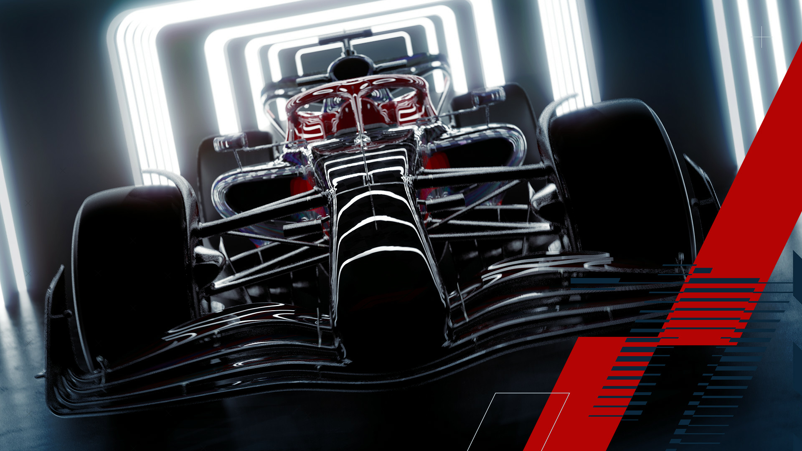
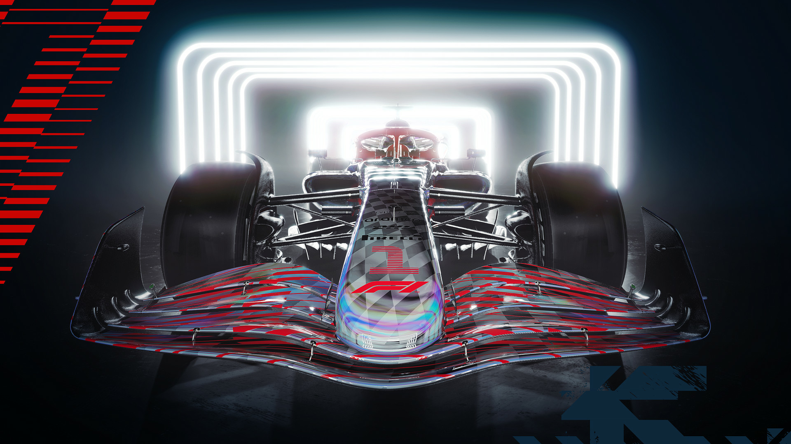
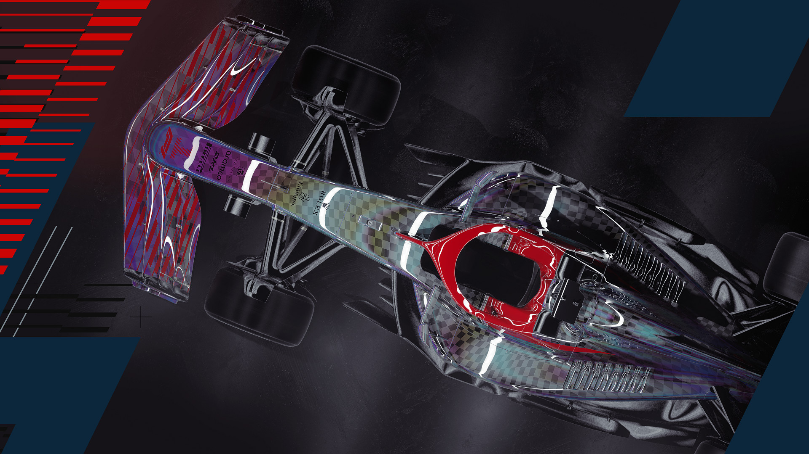

CHAMPIONSHIP
BIENVENIDOS A LA FÓRMULA 1
El Campeonato Mundial de Fórmula 1 de la FIA, más conocido como Fórmula 1 o F1, es la principal competición de automovilismo internacional y el campeonato de deportes de motor más popular y prestigioso del mundo. Esta dirigida por la Federación Internacional del Automóvil (FIA).
A cada carrera realizada se le denomina Gran Premio y el torneo que las agrupa es el Campeonato Mundial de Fórmula 1, que se divide en el Mundial de Pilotos y el Mundial de Constructores. La mayoría de los circuitos de carreras donde se celebran los Grandes Premios son autódromos, aunque también se utilizan circuitos callejeros. Los automóviles utilizados son monoplazas con la última tecnología disponible que los hacen los más rápidos del mundo, aunque siempre estan limitadaos por un reglamento técnico.
El inicio de la Fórmula 1 moderna se remonta al año 1950, en el que participaron escuderías como Ferrari, Alfa Romeo y Maserati. Algunas fueron reemplazadas por otras nuevas como McLaren, Williams, Red Bull y otras que volvieron como Mercedes. Por su parte, los pilotos deben contar con la superlicencia de la FIA para competir, que se obtiene por los resultados en otros campeonatos de esta federación.



